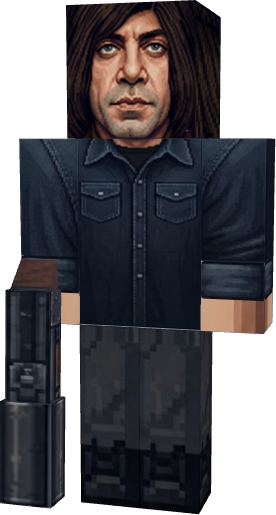
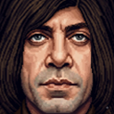
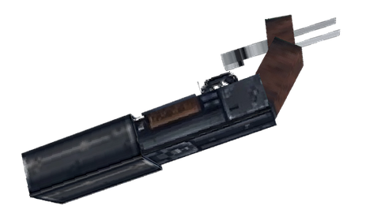

01 / ПЕРВАЯ ВСТРЕЧА 05
5 БЛОКОВ
Спавн — ещё не знакомство
Достижение срабатывает только если живой Чигур подпустил тебя на пять блоков.
Нажми и подойди к нему в диалоге.Сначала он просто стоит у дороги. Один вопрос превращает встречу в охоту. Одна монета решает, кто уйдёт.

Не можешь вызвать его по расписанию. Ночью каждый игрок получает свою проверку: 13 000—23 000 тиков. Чигур оказывается в 12—20 блоках, если найдётся место.
Достижение «Первая встреча» выдаётся не за спавн, а за подход на пять блоков. Встреться с ним, затем выбери реплику — диалог воссоздан по трём кнопкам из игры.

АНТОН ЧИГУРОн остановился рядом и смотрит на тебя. Подойди, чтобы заговорить.
После «Откуда ты?» — пять секунд разговора и тихая охота с дистанции. Постель не спасает, а другой игрок может стать свидетелем.
Во время личной ночной охоты он ломает обе половины кровати, оказывается перед игроком и запускает финальную сцену.
Сперва запусти охоту диалогом выше.Он может обратиться к ближайшему свидетелю в 32 блоках. Выдать цель — плохая идея. Три отказа заставят его оставить охоту.
Вообрази, что ты встретил его во время охоты за другом.Нейтральный Чигур замечает игрока, который стоит на месте десять секунд. Затем следует выбор, двухсекундный бросок и исход — честные 50/50.
Ничего не делай десять секунд. Если не вступишь в разговор, Чигур подойдёт и предложит бросить монету.
После смерти Чигур оставляет дробовик. Проверь его механику на тренировочной мишени: урон падает с расстоянием, шесть выстрелов сменяются десятисекундной перезарядкой.

Проверяй формулу: 7 + 60 × (1 − (дистанция − 2) / 8)².
Каждая карточка — маленький опыт по исходникам: нажимай, чтобы увидеть то, что легко пропустить при первой встрече.
Достижение срабатывает только если живой Чигур подпустил тебя на пять блоков.
Нажми и подойди к нему в диалоге.Три раза ответишь «...» — шкала получит 34 + 34 + 34 и превысит 100.
0 из 3 молчаний.Выигранная монета отдельно объявляет результат игрокам в пяти блоках.
Подойди и подбрось.После шести выстрелов охотник ждёт следующую игровую ночь для пополнения патронов.
6 патронов до новой ночи.Без прямой видимости он исчезает после двух минут, а не сразу после ухода за угол.
Взгляд держит его в мире.После двух попыток уговорить свидетель получает третий шанс. Затем Чигур отступает.
Попробуй сказать «нет» три раза.Пять скрытых достижений из оригинальных JSON, связанные с главным древом. Названия и описания — авторские. Очки здесь показывают только прогресс исследования страницы.
Использованы оригинальные текстура, 3D-геометрия, девять анимаций, пять файлов достижений и звуки мода. Ночная проверка, три ответа, монета, свидетель, кровать и дробовик перенесены из Java-логики. Мини-игры — наглядная реконструкция; они не заменяют запуск мода.